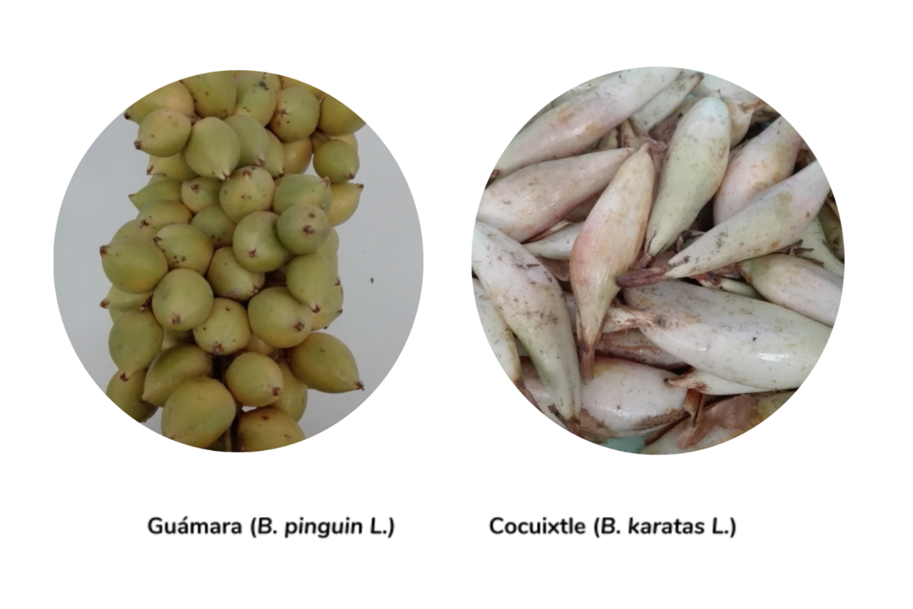

7 Guámara - Cocuixtle
Guámara (B. pinguin L.) | Cocuixtle (B. karatas L.)

Martha Guillermina Romero-Garay, Efigenia Montalvo-González, María De Lourdes García-Magaña1*
Tecnológico Nacional de México/ Instituto Tecnológico de Tepic Av Tecnológico 2595, Col Lagos del Country CP 63175, Tepic Nayarit, México.
Autor para correspondencia: mgarciam@ittepic.edu.mx
7.1 Generalidades
7.1.1 Guámara (B. pinguin)
Su nombre proviene del tarasco o purépecha timbiriche, proveniente de tumbire, que significa racimo; en México es común este nombre. En el estado de Nayarit, principalmente en el municipio de Rosamorada, se conoce como guámara, en Sinaloa, se conoce como aguama. En otros países, como en Panamá se le conoce como Piro; en Costa Rica, Honduras, Guatemala, El Salvador, Nicaragua y Colombia se le conoce como piñuela. B. pinguin fue descrita por Carlos Linneo y publicado en Species Plantarum 1: 285. 1753 (Linnaeus, 2018; Biblioteca Digital de la Medicina Tradicional Mexicana, 2009). Etimológicamente Bromelia es el nombre genérico que fue otorgado en honor al botánico sueco Olof Bromelius (1639 – 1705) y pinguin es el epíteto latino que significa “grueso”. En el norte de Nayarit, se consume para aliviar enfermedades respiratorias, se hierve en agua, se agrega piloncillo y se cocina a fuego lento hasta que el piloncillo se convierte en miel, también, se puede comer cruda, pero debe estar madura, de lo contrario, puede saber un poco amarga. En Yucatán se recomienda para el tratamiento de la tos ferina; con el fruto se prepara un cocimiento junto con menta, poleo y toronjil y se toma varias veces al día (Biblioteca Digital de la Medicina Tradicional Mexicana, 2009). En Colombia específicamente en el norte del Cauca se usa en jugos, en El Salvador se usa para realizar el Atol de Piñuela, uno de los atoles más típicos y cotidianos desde las épocas nahuat-pipil, esta especie se encuentra en peligro de extinción debido al uso indiscriminado de los agroquímicos, las quemas sin control y talas de los bosques, las cuales están acabando con las especies de vegetaciones y animales. En el municipio de Rosamorada, Nayarit, existía en abundancia, pero, debido al desmonte, los lugares donde crece la planta, se han reducido drásticamente.
7.1.2 Cocuixtle (B. Karatas)
El fruto de Cocuixtle (Bromelia karatas L.) conocido como “Timbiriche” es una especie utilizada como cerco vivo en la elaboración de bebidas refrescantes y coadyuvante contra la diabetes (Albarrán-Mondragón et al., 2016). Es un fruto de pulpa dulce y agridulce, presenta similitud con el sabor de la piña, su corte inicia del sur a norte en Yucatán, Chiapas, Nayarit y Sinaloa. En Chiapas, México los frutos de Piñuela se cocinan sobre las brasas de las fogatas, ya que si se consume más de una fruta cruda, es posible se desarrollen ampollas y quemaduras, experimentando ardor bucal. Numerosos usos medicinales tradicionales han sido documentados para este jugo de fruta de Piñuela. Se usa para tratar el escorbuto y la diabetes, y una tintura alcohólica se usa para las úlceras. Se dice que las semillas hervidas y trituradas endulzadas con azúcar expulsan los parásitos internos (Conrad’s, 2017). Estudios realizados sobre B. karatas L., indican que tiene importancia etnobotánica, se ha reportado su uso en la construcción de cercos vivos, así como su empleo ornamental, mientras que del fruto se elaboran bebidas refrescantes. También se utiliza en la medicina tradicional, a la especie se le ha atribuido actividad hipoglucémica, antiparasitaria, antioxidante, entre otras. Además, tiene importancia ecológica, evita la erosión y actúa como hábitat único para muchas especies animales. Adicionalmente, se vislumbra su aplicación agrosocioeconómica, ya que en algunos lugares la especie vegetal es vista con potencial de exportación en el mercado, por su fruto comestible (Espejo-Serna et al., 2007; Albarrán, 2008; Vázquez, E. 2007; Orellana, 2004).
En México pocos son los estudios que reportan la presencia del Timbiriche en el Estado de México (Pérez y Madrigal, 2005). Albarrán (2009) reporta la distribución de dicha especie en el Sur de Malinalco, donde el fruto se comercializa de manera local en el mercado de la comunidad, sin embargo, no existe producción formal y conocimiento de la importancia socioeconómica que esto puede representar (Albarrán, 2009). Aunado a ello, en las nuevas generaciones ha disminuido el conocimiento del uso de la especie en la medicina tradicional y por consiguiente también en el consumo y uso de B. karatas, probablemente debido a la pérdida de identidad cultural (usos y costumbres) y la continua disminución de las poblaciones de dicha planta, que se ha observado en la comunidad, ya sea por adopción de nuevas tecnologías como las cercas de alambre espigado y/o el uso y habilitación de tierras para labores agrícolas o casa habitación (Orellana, 2004; Konings y Wolf, 1999).
7.2 Características agronómicas
7.2.1 Taxonomía y Botánica
Los frutos Guámara (B. pinguin L.) también conocida como “maya” o “piña de ratón” y Cocuixtle (B. karatas L.) también conocida como Bromelia plumieri (E. Morren), “aguamas” o “piñuela”, forman parte del género de Bromelias dentro de la familia Bromeliácea, integrado por plantas con relevancia ecológica por su grado de endemismo y relación con la fauna de su hábitat (Figura 7.1 y 7.2).
Figura 7.1: Figura 7.1 Fruto guámara (B. Pinguin)
Figura 7.2: Figura 7.2 Fruto cocuixtle (B. Karatas)
La familia de estas especies vegetales se dividen en tres subfamilias: Pitcairnioideae, Tillandsioideae y Bromelioideae, se caracterizan con base en su forma de vida, posición del ovario, tipo de fruto, morfología de la semilla y margen de las hojas. Estas plantas son originarias de la zona neotropical y tropical, y se producen en gran parte de América Latina (Hornung-Leoni, 2011; Martinelli et al., 2008). En el cuadro 7.1, se presenta la descripción taxonómica y botánica de los frutos.
| NOMBRE | GUÁMARA | COCUIXTLE |
|---|---|---|
| Nombre común | “guámara” | “cocuixtle” |
| Especie | Bromelia Pinguin L | Bromelia Karatas L. |
| Descripción Taxonómica | ||
| Reino | Plantae | Plantae |
| Subreino | Tracheobionta | Tracheobionta |
| División | Magnoliophyta | Magnoliophyta |
| Clase | Liliopsida | Liliopsida |
| Subclase | Commelinidae | Commelinidae |
| Orden | Poales | Poales |
| Familia | Bromeliaceae | Bromeliaceae |
| Subfamilia | Bromelioideae | Bromelioideae |
| Género | Bromelia | Bromelia |
| Descripción botánica |
|
|
|
|
|
|
|
|
|
|
|
|
|
|
| *Espejo Serna et al., (2010) |
7.2.2 Reproducción
Las bromelias son esencialmente un grupo de especies hermafroditas, aunque algunas presentan sistemas de cruzamiento diferentes y poco comunes como dioecia (individuos estaminados e individuos pistilados), andromonoica (individuos con flores hermafroditas e individuos estaminados), monoecia (flores estaminadas y pistiladas en el mismo individuo) y poligamomonoecia (flores estaminadas, pistiladas y hermafroditas en el mismo individuo). En cuanto a la dispersión de frutos y semillas, en los miembros de la subfamilia Bromelioideae los frutos son carnosos, generalmente de tipo baya, con semillas desnudas, es decir, sin apéndices, y el fruto o fragmentos de éste son dispersados por vertebrados o, en raras ocasiones, por hormigas que se alimentan del fruto o de las semillas, en particular de aquellas que presentan un cuerpo aceitoso llamado elaiosoma, la producción de frutos en especies de esta sub-familia suele ser alta (como en B. pinguin), ya que en muchas de ellas, las flores se autopolinizan (Chaparro et al., 2011).
7.2.3 Condiciones de hábitat y distribución
La planta B. pinguin L. se distribuye en el Neotrópico, desde las Antillas y norte de México hasta las Guayanas y Ecuador, donde se emplean como cercas vivas para separar linderos y es conocida por los nombres comunes guámara, conquistle, muta, maya, piñuela y piña de ratón, entre otros (Espejo Serna et al., 2010; Pío León et al.,2009). La planta B. karatas se distribuye geográficamente en el Neotrópico creciendo en bosques tropicales caducifolios y subcaducifolios a una altura de 350-450 m desde las Antillas y México hasta Brasil y Ecuador, floreando y fructificando de enero a marzo. Es conocida por los nombres comunes aguama, cocuixtle, piñuela, timbiriche, entre otros (Espejo Serna et al., 2010). En el estado de Nayarit se distribuye en los municipios de Acaponeta, Huajicori, Rosamorada, Ruíz, Santiago Ixcuintla, Tecuala, Ahuacatlán, Amatlán de cañas, Ixtlán del Río y Jala (INIFAP, 2010). En general, a estas dos especies en México, se les puede encontrar en Campeche, Chiapas, Guerrero, Jalisco, Michoacán, Nayarit, Oaxaca, Querétaro, Sinaloa, San Luis Potosí, Veracruz y Yucatán (Espejo-Serna y cols, 2010). Debido a que estas especies son consideradas en peligro de extinción, se conservan en jardines botánicos particulares o institucionales, principalmente en el sureste del país. Son muy pocas las especies de bromelias mexicanas que se conservan en bancos de germoplasma; entre ellas están B. pinguin, conservada a –20 ºC en el Banco de Semillas FESI y Ananas comosus en el Banco Nacional de Germoplasma Vegetal (BANGEV) de la Universidad Autónoma Chapingo, de la misma manera en el Jardín Botánico del Centro de Investigación Científica de Yucatán A. C. se encuentran B. karatas y B. pinguin en resguardo, en el Jardín Botánico “Francisco Javier Clavijero” del Instituto de Ecología, A. C. (INECOL), Xalapa, Veracruz, se encuentra B. pinguin (Chaparro et al., 2017).
7.2.4 Estacionalidad
La producción de fruta ocurre principalmente en los meses de marzo a julio y su corte inicia desde el mes de octubre, sin embargo la mayoría de los agricultores que cultivan B. pinguin y B. karatas los utilizan para cercar sus terrenos, y en la temporada de producción del fruto, los cosechan y se alimentan de ellos, sin darle mayor importancia a su manejo por su casi nula inversión económica, debido a que la piñuela es resistente a la sequía que medra en suelos marginales (Orellana, 2004). Es decir, el cultivo de la especie no tiene una producción formal, o al menos, no está bien documentada y entendida (Albarrán-Mondragón et al., 2016).
7.2.5 Plagas y enfermedades
Las enfermedades en las bromelias son provocadas por diversos organismos. Los hongos como Curvularia sp., Phoma sp. y Macrophoma sp. Causan manchas foliares, y su presencia se fomenta por el exceso de humedad. Las manchas de color amarillo, café, negro, rojizo o violeta por lo general se extienden a partir de la punta de las hojas hasta afectarlas totalmente (Chaparro et al., 2011). Especies de Fusarium causan marchitez en las hojas, las cuales adquieren una tonalidad café. Otros organismos, como los piojos harinosos, se hospedan en lugares inaccesibles de las hojas, se propagan rápidamente y dañan las plantas al succionar sus fluidos. Dichos organismos se ven favorecidos por el escaso movimiento del aire y los calores secos. Los áfidos son los pulgones que al alimentarse de la savia de las hojas causan su enrollamiento y atrofia y en ocasiones transmiten virus. Para controlarlos se observan periódicamente las hojas tiernas de las bromelias para retirar las dañadas y los pulgones visibles. Las escamas son insectos chupadores estacionarios que debilitan las plantas y segregan una mielecilla promotora de afecciones por los hongos. Para evitar su proliferación, se deben revisar y regular cuidadosamente todos los hijuelos del vivero a fin de detectar y eliminar estos organismos, y mantener limpias las herramientas y la ropa de trabajo (Miranda et al., 2007).
7.3 Características nutricionales
7.3.1 Composición nutricional
La caracterización nutricional de los frutos de Bromelia hasta ahora es escasa, ya que sólo tres de 11 especies frutícolas identificadas se han caracterizado (Meza-Espinoza et al., 2017a). Análisis realizados en Cuba y otros países han detectado un alto contenido de componentes nutricionales (Cuadro 7.2), además de considerar estos frutos como un alimento funcional por la presencia de compuestos fenólicos, terpenos, saponinas y ácidos grasos (Payrol et al., 2005; Pío León et al., 2009).
| Composición proximal (g 100 g ¹ base seca) | Bromelia pinguin L.¹ (Fruto fresco) | Bromelia Karatas L.² (Fruto fresco, maduro-verde) |
|---|---|---|
| Humedad | 80.41 | 76.59-86.65 |
| Proteína | 7.20-13.87 | 3.13-13.33 |
| Lípidos | 1.40 | 2.65-1.20 |
| Cenizas | 6.63-10.60 | 4.22-12.00 |
| Fibra cruda | 3.35-3.41 | 0.62-9.20 |
| Carbohidratos | 5.31-15.14 | 15.92-9.65 |
| Minerales (mg 100 g 1 bs) | Minerales (mg 100 g 1 bs) | Minerales (mg 100 g 1 bs) |
| Calcio | 1200-1290 | 290-1650 |
| Hierro | 1.70 | 0.056-0.092 |
| Potasio | 903-2160 | 670-630 |
| Magnesio | 320-500 | 470-390 |
| Sodio | 250 | 0.27 |
| Fósforo | 56.65-160 | 220-1140 |
| Vitamina C (mg 100 g 1) | 126.0 | 3.00-1.00 |
| ¹Payrol et al., (2005a), ²Pío-León et al., (2009). |
Los análisis fitoquímicos evidenciaron la presencia de flavonoides, terpenos, cumarinas, taninos, fenilpropanoides, vitamina C y vitamina E en los frutos maduros, lo que explica los valores de capacidad antioxidante que se presentan en el cuadro 7.3 (Moyano et al., 2012).
| Estadio | Contenido fenólico total1 | CATH2 | PRF3 | Inhibición del O2-4 |
|---|---|---|---|---|
| Jugo verde | 290.3±0.0 | 91.8±0.7 | 2.48±0.0 | 4.0±0.0 |
| Jugo Maduro | 407.9±0.0 | 169.7±2.0 | 2.74±0.0 | 35.3±0.0 |
| BHT | BHT |
|
1.66±0.0 | 15.1±0.0 |
| Ácido ascórbico | Ácido ascórbico | 511.37±0.2 | 0.353±0.2 | 95.8±0.0 |
| 1 Capacidad Total Hidrosoluble en mg equivalente de ác. gálico/100g 2 Poder Reductor Férrico mg equivalente de ác. ascórbico/100g 3 Abs 700nm; 4 Porcentaje Moyano et al., 2012 | 1 Capacidad Total Hidrosoluble en mg equivalente de ác. gálico/100g 2 Poder Reductor Férrico mg equivalente de ác. ascórbico/100g 3 Abs 700nm; 4 Porcentaje Moyano et al., 2012 | 1 Capacidad Total Hidrosoluble en mg equivalente de ác. gálico/100g 2 Poder Reductor Férrico mg equivalente de ác. ascórbico/100g 3 Abs 700nm; 4 Porcentaje Moyano et al., 2012 | 1 Capacidad Total Hidrosoluble en mg equivalente de ác. gálico/100g 2 Poder Reductor Férrico mg equivalente de ác. ascórbico/100g 3 Abs 700nm; 4 Porcentaje Moyano et al., 2012 | 1 Capacidad Total Hidrosoluble en mg equivalente de ác. gálico/100g 2 Poder Reductor Férrico mg equivalente de ác. ascórbico/100g 3 Abs 700nm; 4 Porcentaje Moyano et al., 2012 |
| 4Porcentaje | ||||
| 3Abs 700nm; | ||||
| 2Poder Reductor Férrico mg equivalente de ác. ascórbico/100g | ||||
| 1Capacidad Total Hidrosoluble en mg equivalente de ác. gálico/100g |
7.3.2 Usos Tradicionales
Algunas bromelias proporcionan frutos carnosos que se usan para la elaboración de bebidas, como el agua de piñuela, elaborada con frutos de cocuixtle (B. karatas) (Mondragón-Chaparro et al., 2011, Hornung-Leoni, 2011). Estos usos, tienen sus orígenes en las culturas prehispánicas hace miles de años (Bennett, 2000). Los Aztecas, Mayas, Incas, Quechuas, los Yanomami y otros pueblos las utilizaban como alimento, fibra, en ceremonias religiosas, como medicina y plantas ornamentales, al igual que se sigue utilizando en la actualidad (Bennett, 2000; Pierce 2000; Rondón, 2003). Chaparro et al., (2011), presentan los usos actuales que se han documentado en el país de las diferentes especies de bromelias, en el cual, se presentan al menos nueve usos diferentes para 110 especies mexicanas de bromelias (figura 7.3).
Actualmente esta fruta se come abundantemente en Chiapas, y en Hidalgo. En Hidalgo, la fruta conocida como “timbiriche” se encuentra en los mercados populares en forma de “agua de sabor”, un jugo endulzado y diluido hecho de B. karatas; en Jalisco, el fruto de B. karatas, conocido como “piñuelas”, “cocuixtle” o “jocuixtle”, se encuentra comúnmente en áreas subtropicales entre abril y mayo y se consume directamente o se usa para preparar una salsa para tacos; esta fruta también se consume en Zacatecas, donde es transportada desde el estado de Jalisco.
Figura 7.3: Figura 7.3 Usos más comunes dados a las bromelias en México.
En otros países estas especies también son utilizadas; por ejemplo en Perú, el jugo es succionado del fruto de Bromelia plumieri (E. Morr.) y de esta forma es consumido, se refiere que su sabor es parecido al de la piña (Hornung-Leoni, 2011). En Colombia los frutos silvestres de B. pinguin se usan como alimento. En Venezuela, los frutos de B. karatas L. se comen, se convierten en bebidas o en un dulce de conserva. En el cuadro 7.4 se describe el uso estas especies frutícolas de B. karatas y B. pinguin reportadas para América Latina.
| Uso | Especies | País |
|---|---|---|
| Comestible | Bromelia karatas L., Bromelia pinguin L. | Argentina, Bolivia, Chile, Colombia, Costa Rica, Cuba, Ecuador, El Salvador, Honduras, México, Nicaragua, Panamá, Perú, Puerto Rico, Venezuela |
| Medicinal | Bromelia karatas L., Bromelia pinguin L, | Argentina, Bolivia, Brasil, Chile, Colombia, Cuba, Ecuador, Honduras, México, Nicaragua, Perú, Puerto Rico, Venezuela |
| Fibra textil | Bromelia pinguin L. | Brasil, Bolivia, Chile, Ecuador, México, Nicaragua, Venezuela |
| Cercas vivas | Bromelia karatas L. | Colombia, Ecuador, México, Panamá, Venezuela |
| Meza-Espinoza et al., (2017a), Hornung-Leoni (2011a; b). |
7.3.3 Propiedades biológicas y funcionales
Los frutos de guámara (B.pinguin L.) y cocuixtle (B. karatas L.), han despertado un interés creciente en los últimos años por ser importantes fuentes de enzimas proteolíticas catalogadas como cisteín proteasa (cuadro 7.5). La importancia de la extracción de proteasas de estos frutos va relacionada a diversos estudios que han mostrado cómo las enzimas proteolíticas poseen un potente efecto anticancerígeno, debido a la propiedad de autofagia inducida de la bromelina (proteasa extraída de otra bromelia) contra células de carcinoma mamario. Otros autores señalan que la bromelina de la piña tiene cualidades medicinales que incluyen funciones antiinflamatorias, antitrombóticas, fibrinolíticas y anticancerígenas (Hornung-Leoni, 2011a).
| Proteasa | Especie | pH óptimo | Temperatura óptima (°C) | Actividad específica | Peso molecular (kDa) | Referencias |
|---|---|---|---|---|---|---|
| Karatasina | Bromelia plumieri (E. Morren) L.B.Sm. | 3.4-10.4 | 60 | 0.5 U mg ¹ | 23.84 | Montes et al., (1990) |
| Pinguinaína | Bromelia pinguin L. | 7.2-8.8 | 45-60 | 3.2 mg ¹ 11 U mL¹ | 23.00 | Moreno-Hernández et al., (2016); Payrol et al.,(2005b); Payrol et al., (2008) |
| Referencia: Meza-Espinoza et al., (2017a) |
Por otra parte, estos frutos se caracterizan por tener compuestos fitoquímicos de interés; los frutos maduros de B. karatas L. presentan un mayor contenido de fenoles totales en comparación con los frutos verdes (409.9 y 290.3 mg 100 g-1, respectivamente), así mismo, se ha identificado cualitativamente la presencia de flavonoides, terpenos y cumarinas tanto en la pulpa de frutos verdes como en frutos maduros; sin embargo, en frutos maduros se evidenció la presencia de taninos y fenilpropanoides, los cuales han presentado actividad antimicrobiana, antihelmíntica, antitumoral y antiinflamatoria, cuyos efectos son atribuidos a metabolitos secundarios (fenoles, saponinas terpenoides, etc.) y cisteína proteasas (Pío-León et al., 2009); estos autores reportan la composición fitoquímica de diferentes extractos orgánicos obtenidos de la fruta B. pinguin L. (cuadro 7.6).
Se han reportado actividades biológicas de extractos obtenidos de guámara y cocuixtle (cuadro 7). Los jugos y extractos de frutas exhiben un efecto antibacteriano significativo, donde la actividad se asocia con el contenido mineral y los constituyentes biológicamente activos (Ruiz-Ruiz et al., 2017). Por lo tanto, estos jugos de frutas pueden recomendarse para su uso como un agente antimicrobiano alternativo en la medicina natural para el tratamiento de enfermedades infecciosas (Nascimento et al., 2000). En este sentido, se ha determinado que la fracción proteica obtenida del jugo de frutas B. pinguin L. ha demostrado actividad contra Lumbricus terrestris y Trichomonas vaginalis (Abreu-Payrol et al., (2005a).
| Extractos | Alcaloides | Taninosa | Flavonoides (a) | Cumarinasa | Saponinasa | Terpenos y/o esterolesa |
|---|---|---|---|---|---|---|
| Metanólico (ME) |
|
++ |
|
|
|
|
| Fracción hexánica (HF) | +++ |
|
|
|
|
+++ |
| Fracción clorofórmica (CF) |
|
|
++ | ++ |
|
++ |
| Fracción de acetato de etilo (EaF) |
|
+++ |
|
|
|
|
| Fracción acuosa (AqF) |
|
|
|
|
|
|
| a) (+++) fuerte, (++) medio, (+) presencia deficiente y (-) ausencia completa de metabolito. |
Además, los extractos de la pulpa de fruta han mostrado actividad contra Candida albicans (Camacho-Hernández et al., 2002). A partir de la pulpa de fruta de B. pinguin L. se obtuvieron fracciones polares, las cuales mostraron actividad contra varios géneros de bacterias patógenas humanas (Staphylococcus, Streptococcus, Enterococcus, Salmonella, Shigella, Escherichia y Pseudomonas) (Pío-León et al., 2009).
Ruiz-Ruiz et al., (2017), aislaron y caracterizaron proteínas bioactivas de la pulpa de la fruta B. pinguin L., las cuales demostraron tener actividad antibacteriana y actividad proteolítica. La actividad antibacteriana de las proteínas extraídas de la pulpa del fruto de B. pinguin L. podría estar relacionada con la presencia de enzimas, inhibidores de proteasas y péptidos (Ruiz-Ruiz et al., 2017).
Andrade-Cetto y Medina-Hernández, (2013), evaluaron el efecto hipoglucémico que generaba el consumo vía oral de dos extractos obtenidos a partir de hojas del fruto (extracto con agua y extracto etanol: agua) de cocuixtle, en ratas diabéticas inducidas. Los resultados obtenidos, mostraron un efecto hipoglucémico significativo en comparación a los grupos control, similar al efecto que generaba el consumo de glibenclamida, un fármaco utilizado para el control de la diabetes. El efecto hipoglucémico puede estar relacionado con la presencia de flavonas y flavonoides presentes en los extractos elaborados. Estos componentes ya han mostrado un efecto hipoglucémico previamente evaluado por Torres-Piedra et al., (2010).
| Actividad | Especie | Extracto | Modelo | Dosis | Efecto | Referencia |
|---|---|---|---|---|---|---|
| Citotoxicidad | B. pinguin L. | Etanólico | Artemia salina | 10-1000 µg mL-1 | Baja toxicidad con un DL50 de 1000 µg mL-1 | Abreu-Payrol et al., (2001); Payrol et al., (2005a) |
| Antihelmíntica | B. pinguin L.. | Etanólico | Lumbricus terrestris, Trichomonas vaginalis. | 10 % de extracto Etanólico :agua (v/v) | Actividad antihelmíntica superior a piperazina al 2 %. | Abreu-Payrol et al., (2001); Payrol et al., (2005a) |
| Antibacteriana | B. pinguin L.. | Etanólico, acuoso, acetato de etilo | Staphylococcus aureus ATCC 29213, Enterococcus faecalis ATCC 29212, Salmonella typhi, Shigella flexneri, Shigella dysenteriae, Pseudomonas aeruginosa ATCC 27853, Escherichia coli ATCC 25922 | 50 μL de extracto a 106 UFC mL-1 | Las fracciones polares mostraron actividad antimicrobiana inhibiendo los microorganismos evaluados. | Pío-León et al., (2009) |
| Pío-León et al., (2009) | Antibacteriana | Acuoso | Escherichia coli ATCC 25922, Staphylococcus aureus ATCC 25923. | 59 μL de extracto a 106 UFC mL-1 | Concentración mínima inhibitoria para E. coli de 0.35 mg mL-1 y para S. aureus de 0.68 mg mL-1. | Ruiz-Ruiz et al.,. (2017) |
| Hipoglucémico | B. plumieri (E. Morren). L.B. Sm. | Acuoso y Etanólico obtenido de la hoja | Ratas diabéticas inducidas con estreptozotocinanicotinamida | 35 y 350 mg kg-1 acuoso, 30 y 350 mg kg-1 etanólico | Hipoglucemia después de 120 min de tratamiento, en cualquiera de los dos extractos | Andrade-Cetto y Medina- Hernández (2013) |
La actividad catalítica de las cisteín proteasas depende de la reactividad del grupo tiol del residuo de cisteín del centro activo, el cual rompe enlaces peptídicos de otras proteínas, por otro lado, las cisteín proteasas presentan buena absorción en el intestino delgado después de ser administradas vía oral y por lo tanto, se sugiere que las cisteín proteasas pueden ser utilizadas como un eficaz suplemento alimenticio para prevenir enfermedades (Meza-espinoza et al., 2017a).
7.4 Referencias
Abreu-Payrol, J., Miranda Martínez, M., Toledo Carrabeo, G., & Castillo García, O. (2001). Actividad farmacológica preliminar del fruto de Bromelia pinguin L.(piña de ratón). Revista Cubana de Farmacia, 35(1), 56-60.
Albarrán, M. F. J. (2008). Estudio Florístico de los Huertos familiares de la parte sur de Malinalco, Estado de México(Doctoral dissertation, Tesis de Licenciatura. Facultad de Ciencias. Universidad Autónoma del Estado de México. Toluca, Estado de México, México).
Albarrán-Mondragón, F. J, Buendía-González. L., Orozco-Villafuerte, J., Mulia-Rodríguez, J., (2016). Establecimiento de cultivos in vitro de bromelia karatas L. y su análisis fitoquímico preliminar (Tesis por artículo especializado para obtener el grado de maestra en ciencias). Universidad autónoma del estado de México, México.
Andrade-Cetto A. and A. E. Medina-Hernández (2013) Hypoglycemic effect of Bromelia plumieri (E. Morren) L.B. Sm., leaves in STZ-NA-induced diabetic rats. Frontiers in Pharmacology 4. doi: 10.3389/ fphar.2013.00036.
Beynon R., Bond J. (2001). Proteolytic Enzymes: A practical approach. Tercer edición. Oxford University Press. New York, Estados Unidos.
Barrett, A. (1989) Proteolytic enzymes: nomenclature and classification. En: Proteolytic Enzymes. A Practical Approach (R. Beynot & J. Bond, eds.). Oxford University Press, Oxford. pp. 13-39.
Bruno, M. (2007) “Aislamiento, purificación y caracterización de las proteasas de frutos Bromelia hieronymi Mez. (Bromeliaceae)” Tesis para optar al Doctorado de la Facultad de Ciencias Exactas. Universidad Nacional de La Plata.
Biblioteca Digital de la Medicina Tradicional Mexicana. (2009). Atlas de las Plantas de la Medicina Tradicional Mexicana. México. Recuperado de http://www.medicinatradicionalmexicana.unam.mx/monografia.php?l=3&t=Pi%C3%B1uela&id=7922. www.velvet.unam.mx.
Bromelia Pinguin. (2018). En Wikipedia. Recuperado el 14 de Mayo del 2018 https://es.wikipedia.org/wiki/Bromelia_pinguin#cite_note-3
Camacho-Hernández, I. L., Chávez-Velázquez, J. A., Uribe-Beltrán, M. J., Rı́os-Morgan, A., & Delgado-Vargas, F. (2002). Antifungal activity of fruit pulp extract from Bromelia pinguin. Fitoterapia, 73(5), 411-413.
Camacho-Diaz, S.p., Vargas-Delgado, F., Inzunza-Parra, M.A. y González-Cristerna, J.L. (2011). Method for preparing beverages containing Bromelia pinguin. WPO patent A111874204.
Chaparro, D. M. M., Morillo, I. M. R., Cruz, M. F., & García-Franco, J. G. (2011). La familia Bromeliaceae en México. SAGARPA, Secretaría de Agricultura, Ganadería, Desarrollo Rural, Pesca y Alimentación, SNICS, SINAREFI, Sistema Nacional de Recursos Filogenéticos para la Alimentación y la Agricultura.
Conrad’s, J. (2017). PIÑUELAS FRUITING. Naturalist Newsletter. Extraído de http://www.backyardnature.net/chiapas/pinuela.htm.
Espejo-Serna A., A. R. López-Ferrari, I. Ramírez-Morillo, B. K. Holst, H. E. Luther and W. Till (2004) Checklist of Mexican Bromeliaceae with notes on species distribution and levels of endemism. Selbyana 25:33-86.
Espejo-Serna, A., López-Ferrari, A. R., Martínez-Correa, N., & Pulido-Esparza, V. A. (2007). Bromeliad flora of Oaxaca, Mexico: richness and distribution. Acta Botanica Mexicana, (81).
Espejo-Serna A., Ramírez-Morillo A. I. López-Ferrari R. (2010). Flora del bajío y de regiones adyacentes. Fascículo 165.
Fasman, G. D. (1976). (ed.), Handbook of Biochemistry and Molecular Biology, 3rd Ed., “Proteins,” Vol. III, CRC Press, p. 356.
Gonzales-Borrayo, J., (2015). “Características enzimáticas de proteasas extraídas de los frutos de cocuixtle (Bromelia Caratas) y guámara (Bromelia pinguin) para su evaluación en la obtención de péptidos bioactivos”. Tesis para obtener el grado de Maestro en Ciencias en Alimentos en el Instituto Tecnológico de Tepic.
Gonzalez-Salvatierra, C., Andrade, J. L., Escalante-Erosa, F., García-Sosa, K., & Peña-Rodríguez, L. M. (2010). Antioxidant content in two CAM bromeliad species as a response to seasonal light changes in a tropical dry deciduous forest. Journal of plant physiology, 167(10), 792-799.
Hornung-Leoni C. T. (2011a). Bromeliads: traditional plant food in Latin America since prehispanic times. Polibotánica 32:219-229.
Hornung-Leoni C. T. (2011b) Avances sobre usos etnobotánicos de las Bromeliaceae en Latinoamérica. Boletín Latinoamericano y del Caribe de Plantas Medicinales y Aromáticas 10:297-314.
INIFAP, Nayarit. (2010). Guía PROGAN. Nayarit México.
Konings, K. y J. Wolf. (1999). “Bromelias como productos no maderables. Aprovechar poblaciones naturales de bromelias en Los Altos de Chiapas. Ponencia presentada en el Seminario Retos y oportunidades para el aprovechamiento sostenible de especies no maderables en México y Centroamérica” Oaxaca, 23 al 26 de noviembre de 1999.
Linnaeus, C.V. (2018). Missouri Botanical Garden. Recuperado de http://www.tropicos.org/Name/4300903
López, L. M., Sequeiros, C., Natalucci, C. L., Brullo, A., Maras, B., Barra, D., et al. (2000). Purification and Characterization of Macrodontain I, a Cysteine Peptidase from Unripe Fruits of Pseudananas macrodontes (Morr.) Harms (Bromeliaceae). Protein Expression and Purification 18(2): 133-140.
Martinelli, G., C. M. Vieira, M. Gonzalez, P. Leitman, A. Piratininga, A. F. da Costa and R. C. Forzza. (2008). Bromeliaceae da Mata Atlântica brasileira: lista de espécies, distribuição e conservação. Rodriguésia 59:209-258.
Meza-Espinoza, L., de Lourdes Garcia-Magana, M., de los Angeles Vivar-Vera, M., Sayago-Ayerdi, S. G., Chacon-Lopez, A., Becerra-Verdin, E. M., … & Montalvo-Gonzalez, E. (2017a). ETHNOBOTANICAL AND NUTRITIONAL ASPECTS, AND BIOLOGICAL ACTIVITY OF FRUIT EXTRACTS OF THE GENUS Bromelia. REVISTA FITOTECNIA MEXICANA, 40(4), 425-437.
Meza-Espinoza, L., de los Ángeles Vivar-Vera, M., de Lourdes García-Magaña, M., Sáyago-Ayerdi, S. G., Chacón-López, A., Becerrea-Verdín, E. M., & Montalvo-González, E. (2017b). Enzyme activity and partial characterization of proteases obtained from Bromelia karatas fruit and compared with Bromelia pinguin proteases. Food Science and Biotechnology, 1-9.
Miranda, J. M. E.; J. J. Arellano M.; B. Z. Salazar A.; F. Hernández M.; R. Quero C. y L. Pérez S. (2007). Bases para el manejo comunitario de bromelias ornamentales. Colección Manejo Campesino de Recursos Naturales y Red de Aprendizaje Intercambio y la Sistematización de Experiencias hacia la Sustentabilidad (RAISES). 98 p.
Mondragón-Chaparro D. M., Ramírez-Morillo I., Flores-Cruz M. M., García-Franco J. G. (2011). La familia Bromeliaceae en México. Universidad Autónoma Chapingo.
Montes C., M. Amador, D. Cuevas and F. Cordoba (1990) Subunit structure of karatasin, the proteinase isolated from Bromelia plumieri (karatas). Agricultural and Biological Chemistry 54:17-24.
Moreno-Hernández, J. M., X. D. Hernández-Mancillas, E. L. Coss N., M. A. Mazorra-Manzano, I. Osuna-Ruiz, V. A. Rodríguez-Tirado and J. A. Salazar-Leyva (2017) Partial characterization of the proteolytic properties of an enzymatic extract from “Aguama” Bromelia pinguin L. fruit grown in Mexico. Applied Biochemistry and Biotechnology 182:181-196.
Moyano D. D., M. Osorio R., E. Murillo P., W. Murillo A., J. Solanilla D., J. Méndez A. y J. Aristizabal S. (2012) Evaluación de parámetros bromatológicos, fitoquímicos y funcionalidad antioxidante de frutos de Bromelia karatas (Bromeliaceae). Vitae 19:S439-S441.
Nascimento, G.G.F.; Locatelli, J.; Freitas, P.C.; Silva, G.L. (2000). Antibacterial Activity of Plant Extracts and Phytochemicals on Antibiotic Resistant Bacteria. Brazilian Journal of Microbiology, 31, 247–256.
Orellana A. (2004)."Sondeo agrosocioeconómico y recolección de cultivares de muta (Bromelia sp.) en el oriente de Guatemala. (En red). Disponible en: http://www.icta.gob.gt/fpdf/recom_/rec_nat/%28INFORME%20SONDEO%20Y%20 RECOLECCI_323N%20MUTA%20040105%29.pdf.
Pardo, M.F., L.M.I. López, N.O. Caffini & C.L. Natalucci, (2001). “Properties of a milk clotting protease isolated from Fruits of Bromelia balansae Mez”. Biological Chemistry Hoppe-Seyler., 382: 871-874.
Payrol, J. A., Mosquera, D. M. G., & Meneses, A. (2005a). Determinación de parámetros farmacognósticos y bromatológicos y evaluación de la actividad antiparasitaria de una preparación obtenida del fruto de Bromelia pinguin L. que crece en Cuba. Acta Farm. Bonaerense, 24(3), 377-82.
Payrol, J. A., Obregón, W. D., Natalucci, C. L., & Caffini, N. O. (2005b). Reinvestigation of the proteolytically active components of Bromelia pinguin fruit. Fitoterapia, 76(6), 540-548.
Payrol, J. A., Obregón, W. D., Trejo, S. A., & Caffini, N. O. (2008). Purification and characterization of four new cysteine endopeptidases from fruits of Bromelia pinguin L. grown in Cuba. The protein journal, 27(2), 88-96.
Pérez, J. I., & Madrigal Uribe, D. (2005). Huertos, diversidad y alimentación en una zona de transición ecológica del estado de México. CIENCIA ergo sum, 12(1).
Pío-León J. F., López-Angulo G., Paredes-López O. Uribe-Beltrán M. de J., Díaz-Camacho S. P., Delgado-Vargas F. (2009). Physicochemical, Nutritional and Antibacterial Characteristics of the Fruit of Bromelia pinguin L. Plant Foods Hum Nutr. 64:181–187.
Ruiz-Ruiz J. J., J. Ramón-Sierra, C. Arias-Argaez, D. Magaña-Ortiz and E. Ortiz-Vázquez (2017) Antibacterial activity of proteins extracted from the pulp of wild edible fruit of Bromelia pinguin L. International Journal of Food Properties 20:220-230.
Torres-Piedra, M., Ortiz-Andrade, R., Villalobos-Molina, R., Singh, N., Medina-Franco, J. L., Webster, S. P., & Estrada-Soto, S. (2010). A comparative study of flavonoid analogues on streptozotocin–nicotinamide induced diabetic rats: Quercetin as a potential antidiabetic agent acting via 11β-hydroxysteroid dehydrogenase type 1 inhibition. European journal of medicinal chemistry, 45(6), 2606-2612
Vázquez, E. (2007). “Plan para la cosecha sustentable de bromelias en la comunidad”ejido Guatimoc“, Municipio de Cacahoatán, Chiapas”. Universidad Autónoma de Chiapas 20p.
Verma M. K., Xavier F., Verma Y. K., Sobha K. (2013). Evaluation of cytotoxic and anti-tumor activity of partially purified serine protease isolate from the Indian earthworm Pheretima posthuma. Asian Pacific Journal of Tropical Biomedicine 3(11): 896-901.